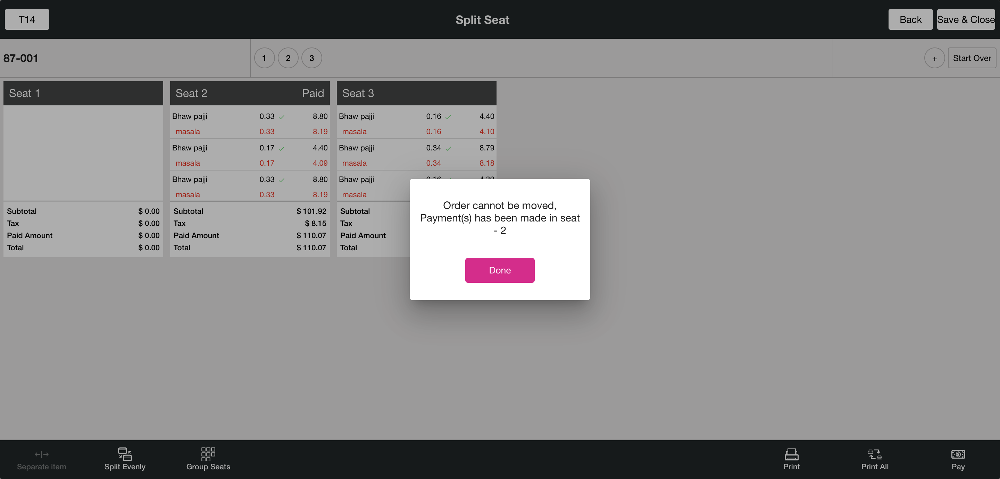
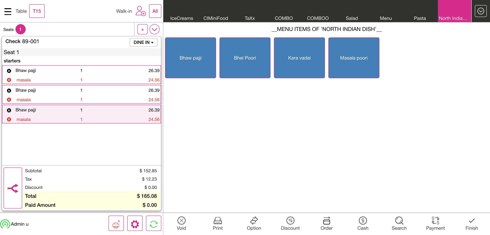
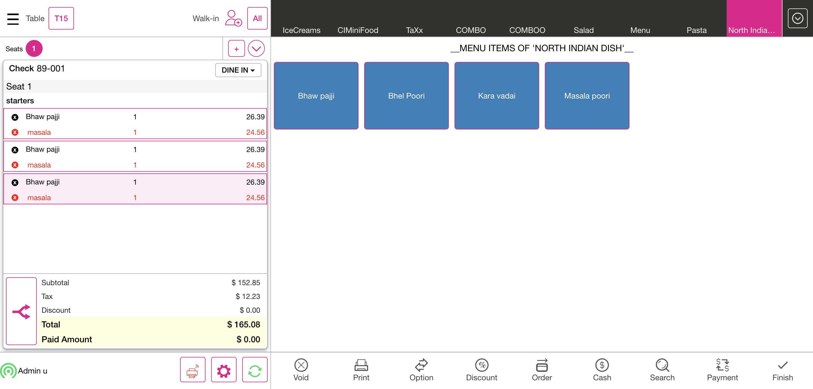

-
Ask Seat Number Feature
11:57:45 am / 00:08:44:310 Fail
Ask Seat Number Feature
01.23.2024 11:57:45 am 01.23.2024 12:06:29 pm 00:08:44:310 · #test-id=1FailVerify the Split seatGiven I'm logged inAnd I closed the order type windowAnd I click AllAnd I click Table Layout tabAnd I select Menu For Dine order type as "North Indian dish" for split CheckAnd I click Finish buttonAnd I click Check Stats tabThen I should see active checkAnd I click Table Layout tabAnd I click the Split Button from the Table Layout ScreenAnd I click the Split By Seat on the Pop-upWhen I click the check from the table layoutThen I should see the Split ScreenWhen I verify the split seat is avilable in split seat screenAnd I click Add Button to create SeatThen I should see created new seatAnd I click the menu on the split check screenAnd I click new check added on the split check screen pageWhen I verify the menu is moved to the added check seatAnd I click new check added on the split check screen pageAnd I click print button in the split seat screenAnd I click print All button in the split seat screenAnd I click the menu on the split seat screenAnd I click Seperate item buttonAnd I select the number of split item "2" for Split checkAnd I click the Continue buttonThen I should see menu has separated as "2"And I click the save & close button on the split screenThen I Should get back to the Order ScreenAnd I click Finish buttonAnd I click Table Layout tabAnd I click the Split Button from the Table Layout ScreenAnd I click the Split By Seat on the Pop-upWhen I click the check from the table layoutThen I should see the Split ScreenWhen I verify the split seat is avilable in split seat screenAnd I click Split Evenly ButtonThen I should see Seperate Item is DisableAnd I get seat 1 prize detailsAnd I get seat 1 prize detailsAnd I get seat 2 prize detailsAnd I get the menu item on the split seat_OneAnd I get the menu item on the split seat_TwoAnd I click new check added on the split check screen pageAnd I click seat one on the split screenAnd I click the Group Seats button in the Split SeatAnd I verify menu item are clubbed in seat 2When I verify all menu is club into single seat after click group seatAnd I get menu details from the group seat 2And I verify prize details after group seats doneAnd I click the save & close button on the split screenThen I Should get back to the Order ScreenAnd I click Seat 2 for add menu itemWhen I verify split seat menu with order screen menuAnd I verify split seat prize with order screen prizeAnd I click Finish buttonAnd I click Table Layout tabAnd I click the Split Button from the Table Layout ScreenAnd I click the Split By Seat on the Pop-upWhen I click the check from the table layoutThen I should see the Split ScreenWhen I verify the split seat is avilable in split seat screenAnd I click new check added on the split check screen pageAnd I click Pay Button in Split ScreenThen I should see the Payment windowAnd I click cash button from the payment method popupAnd I click Exit to return to Order Management ScreenWhen I verify seat as paidAnd I click Split Evenly ButtonThen I should see cannot split as payments popupAnd I click Done button on the PopupAnd I click the menu on the split seat screenAnd I click seat one on the split screenThen I should see order cannot moved popup message1And I click the save & close button on the split screenAnd I click Finish buttonStep skippedAnd I click Check Stats tabStep skippedThen I should see active checkStep skippedAnd I click Table Layout tabStep skippedAnd I click power buttonStep skippedcom.qa.stepdef.Hooks.quit(io.cucumber.java.Scenario)screenshotFailVerify the transferGiven I'm logged inAnd I closed the order type windowAnd I click AllAnd I click Table Layout tabAnd I select the random table from the table layoutAnd I select Menu of Basic validation for QSR as "Menu"And I click Finish Order buttonAnd I click Table Layout tabAnd User select the Transfer buttonAnd User verify Transfer to Server, Transfer to Table and Transfer Item are displayedAnd User select the Transfer Item OptionWhen I select check for transferredAnd Select the required menu item from the Menu Item TableWhen I select check for transferred1And Click the Done buttonAnd Verify the Successful message of Transfer Item OneAnd I click Done button on the PopupStep skippedWhen I click transferred table after done transfer processStep skippedThen Verify the Transferred menu item is available or not in the receiving tableStep skippedAnd Click the finish buttonStep skippedAnd I click power button in the All Orders screenStep skippedcom.qa.stepdef.Hooks.quit(io.cucumber.java.Scenario)screenshot FailVerify the mergeGiven I'm logged inAnd I closed the order type windowAnd I click AllAnd I click Table Layout tabAnd I select Menu for DineIn as "North Indian dish" for split seat order screen for mergeAnd I get the seat number from the checkAnd I get the list of the menu from the order screenAnd I get value the menu values from order screenAnd I click Finish buttonStep skippedAnd I click Table Layout tabStep skippedAnd I select Menu for DineIn as "North Indian dish" for split seat order screen1Step skippedAnd I get the seat number from the check1Step skippedAnd I get the list of the menu from the order screen1Step skippedAnd I get value the menu values from order screen1Step skippedAnd I click Finish buttonStep skippedAnd I click Table Layout tabStep skippedAnd I click Merge buttonStep skippedWhen I click the check from the table layout for mergedStep skippedWhen I click the check from the table layout for merged1Step skippedAnd I click Done button on the pop-up to complete mergingStep skippedThen I should see the merged popup after mergeStep skippedAnd I click Done button on the PopupStep skippedWhen I click the check from the table layout for mergedStep skippedThen I Should get back to the Order ScreenStep skippedAnd I verify check number from the order screenStep skippedWhen I verify the seat number from the order screenStep skippedAnd I select seat oneStep skippedWhen I verify the seat 1 order screen menu with 1st check menuStep skippedAnd I select seat twoStep skippedWhen I verify the seat 2 order screen menu with 2nd check menuStep skippedAnd I click table number on the order screenStep skippedWhen I verify the menu prize after merge doneStep skippedAnd I click Cash button for Complete SaleStep skippedAnd I click Exact button on the cash pop-upStep skippedAnd I click Enter Button on the cash pop-upStep skippedAnd I click Table Layout tabStep skippedAnd I click power button in the All Orders screenStep skippedcom.qa.stepdef.Hooks.quit(io.cucumber.java.Scenario)screenshot
FailVerify the mergeGiven I'm logged inAnd I closed the order type windowAnd I click AllAnd I click Table Layout tabAnd I select Menu for DineIn as "North Indian dish" for split seat order screen for mergeAnd I get the seat number from the checkAnd I get the list of the menu from the order screenAnd I get value the menu values from order screenAnd I click Finish buttonStep skippedAnd I click Table Layout tabStep skippedAnd I select Menu for DineIn as "North Indian dish" for split seat order screen1Step skippedAnd I get the seat number from the check1Step skippedAnd I get the list of the menu from the order screen1Step skippedAnd I get value the menu values from order screen1Step skippedAnd I click Finish buttonStep skippedAnd I click Table Layout tabStep skippedAnd I click Merge buttonStep skippedWhen I click the check from the table layout for mergedStep skippedWhen I click the check from the table layout for merged1Step skippedAnd I click Done button on the pop-up to complete mergingStep skippedThen I should see the merged popup after mergeStep skippedAnd I click Done button on the PopupStep skippedWhen I click the check from the table layout for mergedStep skippedThen I Should get back to the Order ScreenStep skippedAnd I verify check number from the order screenStep skippedWhen I verify the seat number from the order screenStep skippedAnd I select seat oneStep skippedWhen I verify the seat 1 order screen menu with 1st check menuStep skippedAnd I select seat twoStep skippedWhen I verify the seat 2 order screen menu with 2nd check menuStep skippedAnd I click table number on the order screenStep skippedWhen I verify the menu prize after merge doneStep skippedAnd I click Cash button for Complete SaleStep skippedAnd I click Exact button on the cash pop-upStep skippedAnd I click Enter Button on the cash pop-upStep skippedAnd I click Table Layout tabStep skippedAnd I click power button in the All Orders screenStep skippedcom.qa.stepdef.Hooks.quit(io.cucumber.java.Scenario)screenshot
-
org.openqa.selenium.NoSuchElementException
2 tests
org.openqa.selenium.NoSuchElementException
2 failedStatus Timestamp TestName Fail 12:04:06 pm And Verify the Successful message of Transfer Item One Ask Seat Number Feature.Verify the transfer.And Verify the Successful message of Transfer Item OneFail 12:06:21 pm And I get value the menu values from order screen Ask Seat Number Feature.Verify the merge.And I get value the menu values from order screen -
org.openqa.selenium.ElementClickInterceptedException
1 tests
org.openqa.selenium.ElementClickInterceptedException
1 failedStatus Timestamp TestName Fail 12:02:11 pm And I click the save & close button on the split screen Ask Seat Number Feature.Verify the Split seat.And I click the save & close button on the split screen
-
@AskSeatCount018
3 tests
@AskSeatCount018
3 failedStatus Timestamp TestName Fail 11:57:45 am Verify the Split seat Ask Seat Number Feature.Verify the Split seatFail 12:02:13 pm Verify the transfer Ask Seat Number Feature.Verify the transferFail 12:04:15 pm Verify the merge Ask Seat Number Feature.Verify the merge
Started
Jan 23, 2024 11:57:44 am
Ended
Jan 23, 2024 12:06:29 pm
Features Passed
0
Features Failed
1
Features
Scenarios
Steps
Timeline
Tags
| Name | Passed | Failed | Skipped | Others | Passed % |
|---|---|---|---|---|---|
| @AskSeatCount018 | 0 | 3 | 0 | 0 | 0% |